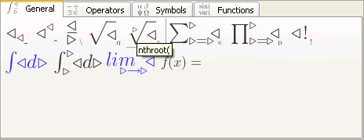
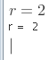
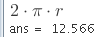
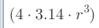
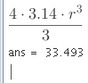
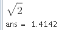
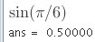
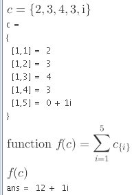
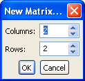
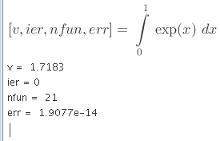

Tutorial
Toolbars
Natural input
Making calculations
Basic statistics
Using arrays
Sums and products
Vectors and matrices
Plots and meshes
Using quadrature
Note on deleting
Where to go next
Back to Index
Text shown in red can be copy pasted to MM v0.5;
to evaluate pasted formula(s) press [Enter] when selected.
Toolbars
First become familiar with toolbars. There's four of
them and you can display/cycle them using [F1].
Blue icon color indicates no role assigned in math
engine, these symbols are provided for convenience
when creating TeX formulas.

Toolbar tool-tips give a hint on keyboard input of given element.
For example n-th root can be input by typing nthroot(
Greek symbol pi by typing pi followed by [Esc] key,
and imaginary unit eg.: sqrt(-1) by typing ii [Esc].
Natural input
Mirai is designed to allow quick and effective input of formulas.
To achieve this editor allows to type formula the same way
as one would do on the command-line of octave.
Making calculations
i) To assign value 2 to variable r type:
r=2 [Enter]

Result from Octave engine will appear bellow.
Always insert * between numbers and symbols.
For example: 2r is wrong whereas 2*r is correct .
ii) Let's calculate circumference:
2* [F3] p *r

Before hitting [Enter] try to use [<-] and [->] cursor keys
to move back and forth in formula.
iii) Let's try to use fractions.
(4*3.14*r^3)

Move cursor behind the closing brace )
and finish typing formula \3 [Enter].

iv) OK, let's find out square root of 2.
[F1] q 2 [Enter]

v) What about sin of 1/6 of pi ?
sin(pi [Esc] /6 [Enter]

Basic statistics
Create vector with input values.
a=[2.31,2.54,2.45] [Enter]
Enter statistics function such as mean(a),
std(a) - standard deviation, var(a) - variance.
Arrays
Create array with input values.
c={2,3,4,3,ii~} [Enter]
Sums and products
Now lets sum-up values of array c. Copy/paste red text into MM.
function(f,c,sum(i,1,5,c_({i})))
Evaluate newly defined function f with array c as a parameter.
f(c)

Vectors and matrices
B=
From menu choose Insert -> Matrix... and choose 2 x 2.

Fill in some value, such as 5,3;1,2 and press [Enter]
Enter matrix operation such as det(B).
Plots and meshes
Display octave plot of function cos() type:
x=0:0.1:6.28;
plot(x,cos(x))
Here is example of using octave mesh:
figure
r=0:0.1:3;
[xx,yy]=meshgrid(r,r);
mesh(r,r,sin(xx^2+yy^2))
print -dpng test.png
Using quadrature
Numerical integration based on Gaussian quadrature quad().
[v,ier,nfun,err]=int(0,1,exp(x),x)

Note on deleting
To delete character position cursor before / after
the character and press [Delete] / [Backspace] key.
Functions are deleted with single [Delete] / [Backspace] key.
(the same works for square root, n-th root and braces).
To delete function such as sine and preserve its content,
move cursor after the opening brace and press [Backspace] key.
To delete fraction and preserve numerator or denominator,
empty the other field and press [Delete] / [Backspace] key.
Where to go next
Mirai is an graphical front-end for GNU Octave 3.0 engine
therefore, you can find more details on available functionality
in the documentation of GNU Octave
http://www.octave.org
Back to Index